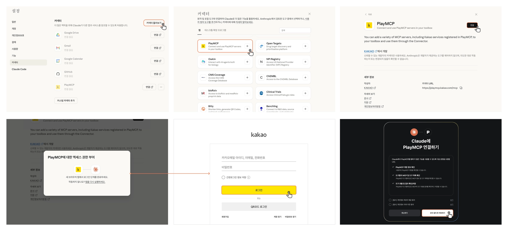

이 실습에서 만들 것
Claude Desktop이 정리한 내용을 카카오톡 나와의 채팅방으로 보내는 연결을 만듭니다
실행 환경은 Claude Desktop입니다. Claude의 커넥터 목록에서 PlayMCP를 골라 연결하고, 카카오 계정으로 로그인하면 준비가 끝납니다. 그 뒤로는 대화창에서 말로 부탁하면 Claude가 나와의 채팅방으로 보냅니다.
나와의 채팅방은 본인만 보는 공간입니다. 여기에 Claude가 직접 글을 남길 수 있으면, 회의 요약이나 오늘 할 일을 자리에서 떠나도 휴대폰으로 받습니다. 한 걸음 더 나아가 Routines로 예약을 걸면, 매일 오전 7시 57분에 그날의 응원 한마디를 자동으로 받습니다. 그 출발점이 Kakao PlayMCP를 Claude Desktop에 붙이는 일입니다.
이 페이지는 나와의 채팅방만 다룹니다. 친구에게 보내기, 단톡방 읽기, 자동 답장은 카카오 공식 API, 비즈니스 채널, 알림톡 같은 별도 영역입니다.
완성하면 흐름은 이렇게 됩니다.
실습 4단계를 한 눈에 보기. 각 단계를 누르면 해당 섹션으로 이동합니다
되는 일
요약, 체크리스트, 회의 메모를 나와의 채팅방으로 보냅니다. 매일 같은 시각 자동 발송도 됩니다.
조심할 일
민감한 고객 정보나 내부 문서는 보내기 전에 사람이 한 번 확인하는 절차를 둡니다.
다른 영역
친구에게 보내기, 단톡방 읽기, 자동 답장은 이 페이지의 범위가 아닙니다.
카카오톡 나와의 채팅방 도구 추가
PlayMCP는 카카오 도구를 도구함에 담아 둡니다. 업무에 필요한 도구만 골라 담으면 Claude가 쓸 수 있는 범위가 분명해집니다. 이 실습에서는 카카오톡 나와의 채팅방 하나만 넣습니다.
PlayMCP 도구 목록에서 이 카드를 찾아 + 도구함에 추가를 누르세요
PlayMCP 화면 안의 버튼입니다. 권한 확인 화면이 나오면 어떤 정보와 동작을 허용하는지 읽고 승인합니다.
Kakao PlayMCP 바로가기 (카카오 공식 MCP 플랫폼) playmcp.kakao.com →커넥터 목록에서 PlayMCP를 골라 연결
Claude Desktop 왼쪽 사이드바의 Customize(사용자 지정)를 누르고 커넥터로 가면, 바로 연결할 수 있는 커넥터 목록이 있습니다. 여기서 playmcp를 검색해 나온 PlayMCP를 추가하고, 카카오 계정으로 로그인하면 끝납니다. 아래 순서를 그대로 따라가면 됩니다.

playmcp를 입력하면 PlayMCP 하나가 나옵니다. 카카오(KAKAO)에서 만든 커넥터입니다. 그 카드의 +를 눌러 추가합니다.Claude Desktop 버전이 낮을 수 있습니다. Claude > Check for Updates로 최신 버전을 받습니다. 회사 SSO 계정이면 관리자가 커넥터를 막아 둔 경우가 있으니 관리자에게 문의합니다.
나와의 채팅방에 짧은 메시지 보내기
처음에는 민감한 정보가 없는 짧은 문장으로 도구 호출을 확인합니다
Settings를 닫고 새 대화를 연 뒤 다음처럼 요청합니다. 도구 사용 승인 화면이 뜨면 카카오톡 나와의 채팅방 도구를 쓰도록 허용합니다.
정상적으로 연결돼 있으면 Claude가 응답 도중에 카카오톡 도구를 호출하겠다는 승인 요청을 띄웁니다. 승인하면 휴대폰의 나와의 채팅방에 메시지가 도착합니다. 도구를 거치지 않고 "보냈습니다"라고만 답하면 실제로는 보내지지 않은 것이니 연결 상태를 다시 확인합니다.
- Claude가 카카오톡 도구를 호출하겠다는 승인 요청을 띄우는가
- 승인한 뒤 도구 호출 결과가 성공으로 표시되는가
- 휴대폰 또는 데스크톱 카카오톡의 나와의 채팅방에 메시지가 실제로 도착했는가
세 개 모두 확인되면 연결이 끝났습니다. 하나라도 빠지면 트러블슈팅 섹션을 봅니다.
연결을 확인했다면 실무 요청으로 넘어갑니다. 오늘 바꾼 내용 요약, 내일 확인할 항목처럼 짧은 보고가 잘 맞습니다.
매일 아침 7시 57분, 응원 한마디 자동으로
한 번 보내는 건 그때그때 부탁하면 되고, 매일 자동은 Routines로 예약합니다
매일 같은 시각에 자동으로 받으려면 Routines를 씁니다. 정해진 시각에 클라우드에서 무인으로 도는 예약형 에이전트입니다. 같은 PlayMCP 연결을 걸어두고 아래 한 줄을 예약하면, 매일 오전 7시 57분에 그날의 응원 메시지가 나와의 채팅방으로 옵니다.
예약 작업이 한꺼번에 몰리는 정각에는 실행이 최대 30분까지 밀릴 수 있습니다. 정각을 피해 몇 분 일찍 잡아두면, 조금 밀리더라도 원하는 시간 근처에 안정적으로 도착합니다.
메신저 연결의 안전 장치
메신저 연결은 편하지만, 한 번 보내면 되돌리기 어렵습니다
나와의 채팅방은 본인만 보는 공간이라 사고가 나도 외부로 퍼지지는 않습니다. 그래도 토큰이 노출되거나 보내면 안 되는 정보가 섞이는 일은 막아야 합니다. 운영 기준을 미리 정해두면 자동화 범위를 넓힐 때도 안심할 수 있습니다.
다음 문장을 Projects 지침이나 대화 첫머리에 넣어두면 실수 가능성이 줄어듭니다.
"카카오톡으로 보낼 때는 먼저 초안을 보여주고, 내가 승인한 뒤에만 전송합니다. 고객 개인정보, 계약 금액, 비공개 토큰은 보내지 않습니다."
트러블슈팅. 연결이 안 될 때 점검 순서
PlayMCP, 카카오 권한, Claude Desktop 커넥터 설정을 차례대로 확인합니다
Q1. 커넥터 또는 커넥터 둘러보기가 보이지 않습니다
원인 후보:
- 버전이 낮음. 메뉴에서 Claude > Check for Updates로 최신 버전을 받습니다.
- 관리자 제한. 회사 SSO 계정이라면 관리자가 커넥터를 막아 둔 경우가 있어, 관리자에게 허용을 요청합니다.
Q2. 커넥터 목록에 PlayMCP가 보이지 않습니다
커넥터 둘러보기 화면 위쪽의 검색창에 PlayMCP를 쳐서 찾습니다. 웹 탭에 있는 커넥터이니 탭이 데스크톱 확장 프로그램으로 가 있지 않은지 봅니다. 그래도 없으면 Claude Desktop을 최신 버전으로 올린 뒤 다시 확인합니다.
Q3. 커넥터는 추가됐는데 도구가 보이지 않거나 인증 오류가 납니다
원인 후보:
- 카카오 로그인 미완료. 커넥터를 한 번 지우고 다시 추가한 뒤, 뜨는 카카오 로그인 창에서 끝까지 승인합니다.
- 도구 토글 꺼짐. 새 대화 입력창의 도구 아이콘을 눌러 PlayMCP 커넥터가 켜져 있는지 봅니다.
- 권한 동의 누락. 연결 마지막의 모두 동의 후 계속하기를 끝까지 눌렀는지 확인합니다.
Q4. 도구는 보이는데 메시지가 보내지지 않습니다
카카오 계정 권한이 만료됐거나 PlayMCP 도구함에서 카카오톡 도구가 빠졌을 수 있습니다. PlayMCP에서 다시 로그인하고, 카카오톡 나와의 채팅방 도구가 도구함에 활성화돼 있는지 확인합니다. 대화창에서 도구 승인을 실수로 거부하지 않았는지도 봅니다.
Q5. 친구나 단톡방으로도 보낼 수 있나요?
이 페이지는 나와의 채팅방 기준입니다. 친구 발송, 단톡방 읽기, 자동 답장은 권한과 정책이 다른 영역입니다. 고객 알림은 알림톡이나 비즈메시지로, 상담 자동화는 카카오톡 채널과 상담톡으로 별도 검토해야 합니다.
PlayMCP와 Claude Desktop의 화면 구성과 메뉴 이름은 업데이트에 따라 바뀔 수 있습니다. 카카오톡으로 보낸 메시지는 되돌리기 어려우니, 민감 정보 전송에 대한 책임은 사용자에게 있습니다. 업무 도입 전에는 사내 보안 정책을 함께 확인하시기 바랍니다.
먼저 나와의 채팅방으로 작게 시작하세요
PlayMCP 도구함에 나와의 채팅방을 추가하고, Claude Desktop 커넥터에서 PlayMCP를 찾아 연결한 뒤 짧은 테스트부터 보내 보세요.
그다음 Routines로 매일 아침 응원 메시지를 예약하면 됩니다. 12분이면 시작할 수 있습니다.